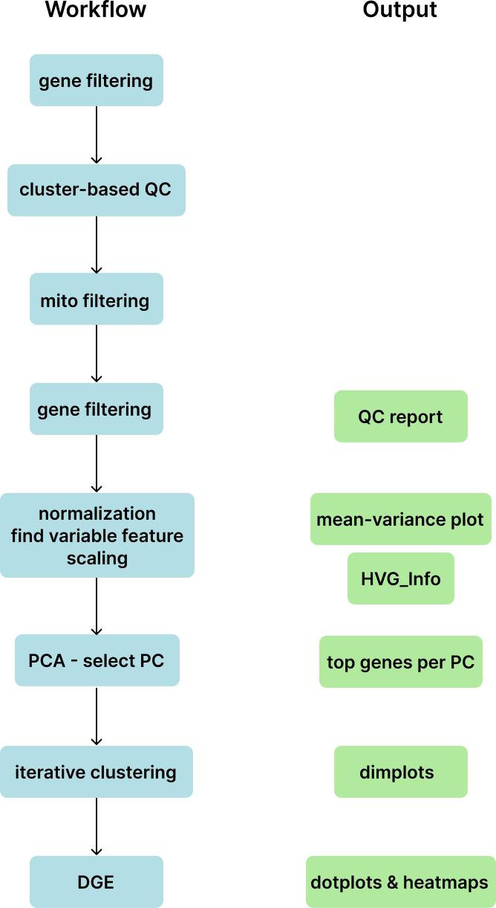

BioYourOwnBowl is an R package for single-cell RNA-seq analysis based on Seurat, with utilities tailored for relatively homogeneous datasets. It streamlines iterative analysis by reducing manual overhead, such as figure sizing and repetitive parameter tuning.
The package provides an automated workflow for generating nuanced clustering and comprehensive visualizations to support evaluation. The workflow is modular: each function can be used independently, allowing users to assemble and customize their own analysis pipeline.

You can install the development version of BioYourOwnBowl from GitHub with:
# install.packages("remotes")
remotes::install_github("june-zhang-bioinfo/BioYourOwnBowl")For a complete example workflow with detailed explanations, see vignette.
library(BioYourOwnBowl)
library(Seurat)
library(ggplot2)
library(dplyr)
library(tidyr)
library(tibble)
library(circlize)
library(grid)
library(RColorBrewer)
library(stringr)
library(grDevices)
library(stats)
library(utils)
library(jsonlite)
library(Matrix)
library(ComplexHeatmap)
library(pheatmap)
library(scCustomize)
library(rlang)
library(matrixStats)
library(sessioninfo)
library(yaml)
# Load example Seurat object
seurat_obj <- readRDS("path/to/example_seurat.rds")
# Run a minimal pipeline
seurat_obj <- optimize_single_cell(
object = seurat_obj,
vf.method = "vst",
nfeatures = 2000,
clusters_min = 5,
clusters_max = 12,
out_dir = "results/"
)optimize_single_cell() - Full automated pipelinefilter_genes_by_expression() - Remove lowly expressed genesremove_low_quality_clusters() - Cluster-based cell filtering, based on the concept that low-quality cells tend to be clustered together and hard cutoff may not be thorough.select_PCs() - Automated PC selection based on elbow plot. Adjustable stringency.clustering() - Parameter sweep for optimal clustering, allowing desired number of clusters.export_top_pc_genes() - Extract top genes per Principal Component for biological inspection.features_plots() - Dynamic feature plot grids.violin_plots() - Combined violin/box/dot plots, showing non-zero distribution.heatmap_cell_level() - Cell-level expression heatmaps.heatmap_pseudobulk() - Pseudobulk heatmaps, usually used for participant level.heatmap_meta() - Meta-level averaged heatmaps.stacked_bar_plots() - Multi-layer categorical data distributions.dotplots_pdf() - dot plots with intelligent sizing, including 2 dot plots: genes from user’s prior knowledge and unbiased DGE.double_volcano() - 2D volcano plots, showing 2 comparisons at the same time.tcr_treemaps() - Area proportional TCR clonotype visualizations.venn_plots() - Area proportional venn ploe of overlapped genes.select_marker_genes_score() - Product score based marker selection, takes both p-value and log2FC into account.cnmf_bar_plots() - Visualize top genes per program.cnmf_umaps() - UMAP plots for cNMF program values.cnmf_top_programs - Assign Primary, Secondary, Tietiary and Quaternary programs to cells.compare_cnmf_programs() - Compare programs to self or siblings.setup_python() - Set up python environment for reticulate.prepare_h5ad() - Export to AnnData format for Python-based functions.density_plot() - Generate Scanpy density plot.The optimize_single_cell() function generates:
logs/ - Parameters and session infoqc.pdf - Quality control plotsHVG_info.csv - The ranking of variable features and the number of cells express themelbow.png - PC selection plotMean-variance_*.png - Variable feature plotsPCs_top-genes.csv - Top genes per principal componentdimplot.pdf - Dimplots showing clustering resultsk*_r*_barplot.png - Cluster distribution plotsk*_r*_dotplot.pdf - Dot plots for each clustering, including selected features and DGEk*_r*_heatmap.png - Expression heatmaps for DGEobject.rds - Final processed Seurat objectMIT License. See LICENSE for details.
Report bugs or feature requests at: https://github.com/june-zhang-bioinfo/BioYourOwnBowl/issues